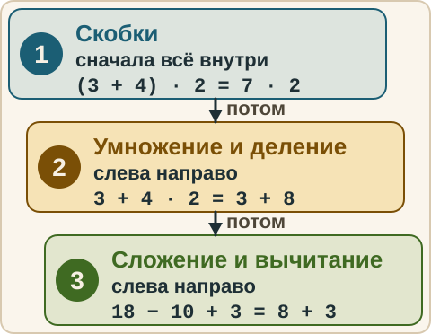
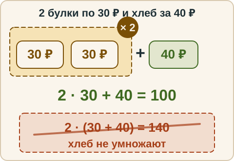
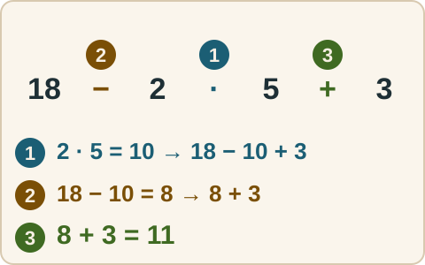
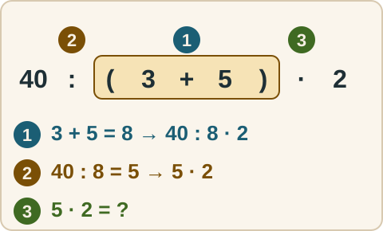
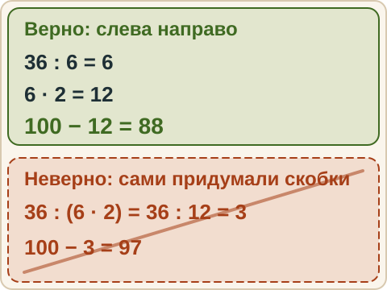

Математика: база · занятие 1Порядок действий
Цель: ты сам расставляешь порядок действий в выражении со скобками, умножением и делением. Ответы и подсказки спрятаны: сначала реши сам, потом нажми кнопку.
Вспомнить
Без подсказок, сразу проверка. Отмечай, на чём споткнулся, — в журнал.
- 7 + 8
- 23 − 9
- 6 · 7
- 56 : 8
- 3 + 4 · 2
- (3 + 4) · 2
Беглость: таблица умножения
Ответь на примеры. Ошибся — пример вернётся: попробуй ещё раз. Без таймера.
- 6 · 7
- 7 · 8
- 8 · 9
- 6 · 9
- 7 · 7
- 8 · 8
- 9 · 9
- 6 · 8
- 7 · 9
- 48 : 6
- 63 : 7
- 72 : 8
Правило
Правило порядка действий. Если в выражении нет скобок:
- сначала умножение и деление — слева направо, в том порядке, как записаны;
- потом сложение и вычитание — слева направо.
Если есть скобки — сначала всё, что внутри скобок, по тем же двум шагам.

Из жизни. «Купи 2 булки по 30 рублей и ещё хлеб за 40» — это 2 · 30 + 40. Сначала считаем булки (умножение), потом добавляем хлеб. Никто не делает 2 · (30 + 40).

Разобранный пример
18 − 2 · 5 + 3
- Скобок нет. Ищу умножение и деление: 2 · 5 = 10.
- Переписываю: 18 − 10 + 3.
- Теперь слева направо: 18 − 10 = 8, 8 + 3 = 11.
- Ответ: 11.
Полезно над каждым действием ставить номер: первым идёт умножение (1), вторым — вычитание (2), третьим — сложение (3).

С подсказкой
Решай сам. Подсказку открывай, только если застрял.
- 40 : (3 + 5) · 2

Сам
Сначала сделай первый шаг сам.
- 7 + 3 · (10 − 4)
- 100 − 36 : 6 · 2
- (15 − 9) · (2 + 5)
Ловушка
Ловушка. В б) многие считают 36 : (6 · 2) = 3 и получают 97. Умножение и деление равноправны: идём слева направо, 36 : 6 = 6, затем 6 · 2 = 12, и 100 − 12 = 88. Проверь себя: если в выражении нет скобок, ты сам их не придумываешь.

Смесь
Вперемешку: таблица, деление, порядок действий. Ответ записывай с промежуточными шагами.
- 9 · 6
- 45 : 5
- 5 + 6 · 3
- (5 + 6) · 3
- 72 : 9 · 2
- 30 − 4 · 7
- 17 + 8 − 5
- 64 : 8 + 7
Журнал
Запиши 1–3 строки: «что перепутал → как проверить». Пример формы: «считал слева направо и сложил раньше умножения → сначала ставлю номера действий над знаками».
- …